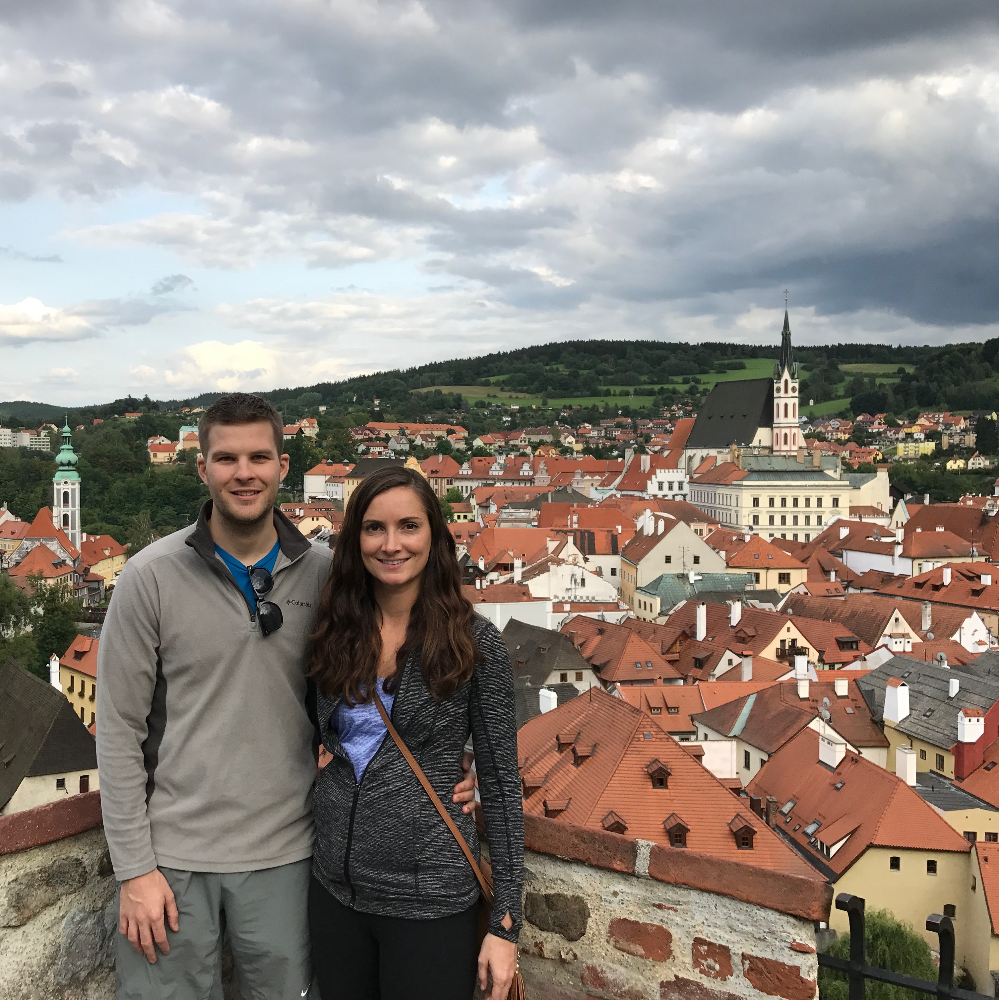

Andrew Huschka
Front End Developer and World Traveler

Featured Travel

Macchu Picchu
Home to the Inca Indians. It is a ruins and believed to be the highest point they lived. They did this to praise their gods and get as close as possible to them during their life.

Patagonia
the southern portion of South America and spreads across Argentina and Chile. It is where some of the largest dinosaur remains have been found and has some great areas to hike.

Cesky Krumlov
A small village 2 hours outside of Prague. It is a UNESCO world heritage site. There is a castle that overlooks the city. To this day live bears can be found living in the castle – they were considered sacred animals during the golden years of Cesky Krumlov.